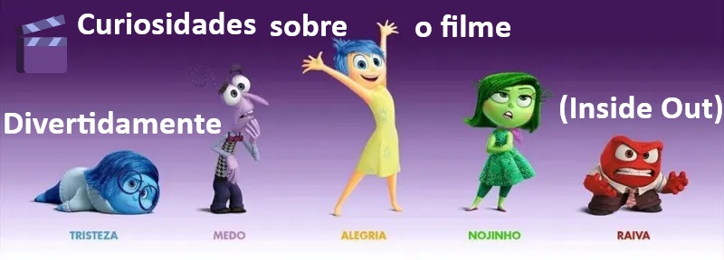
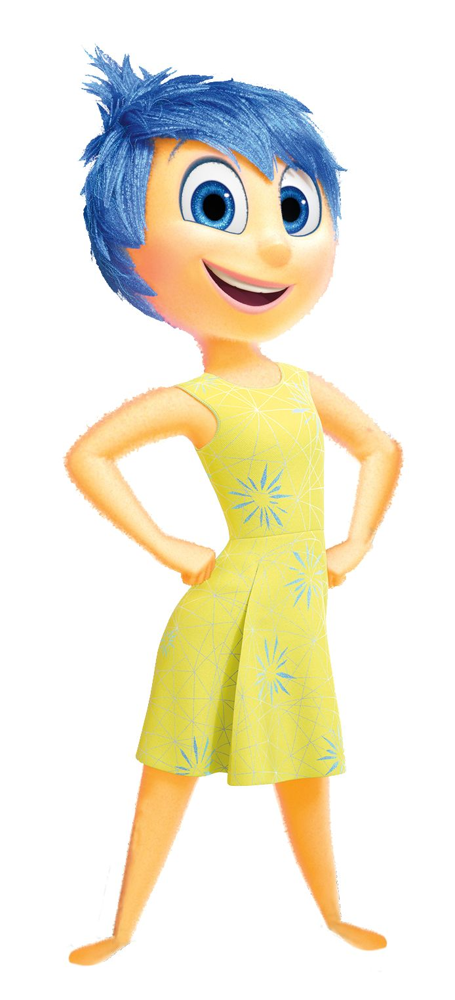
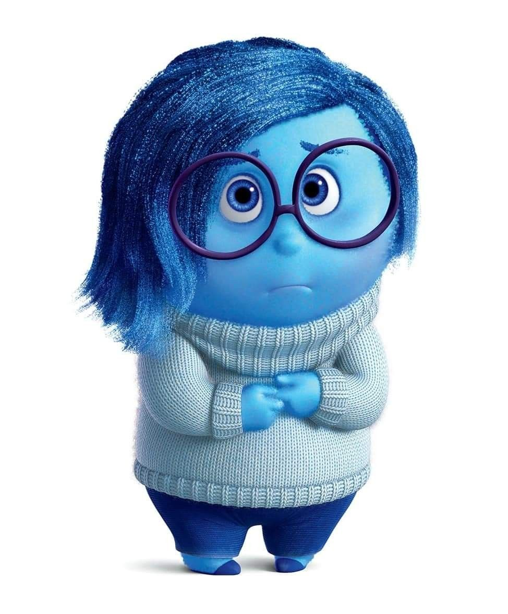
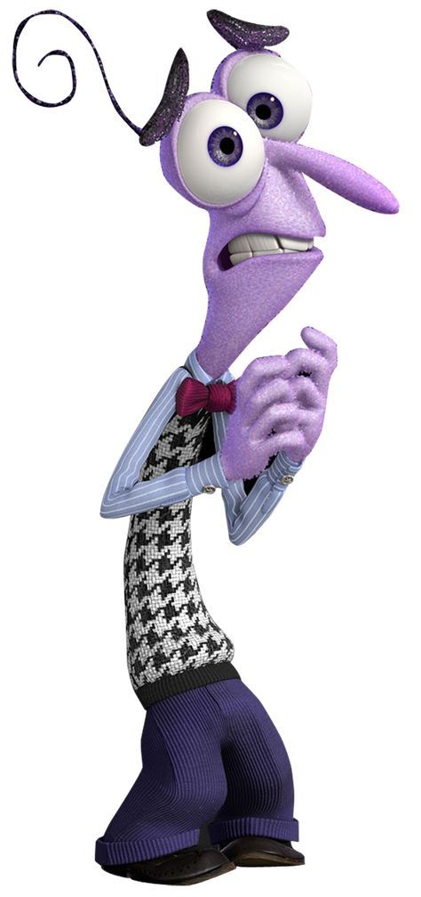
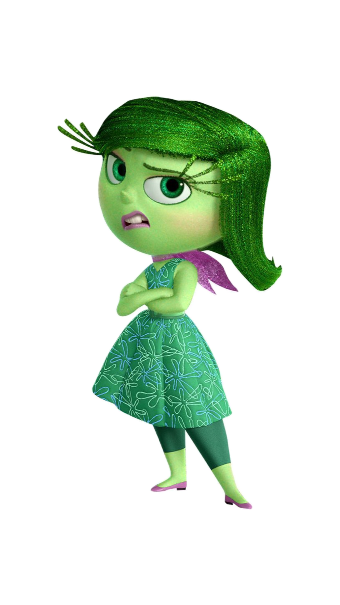
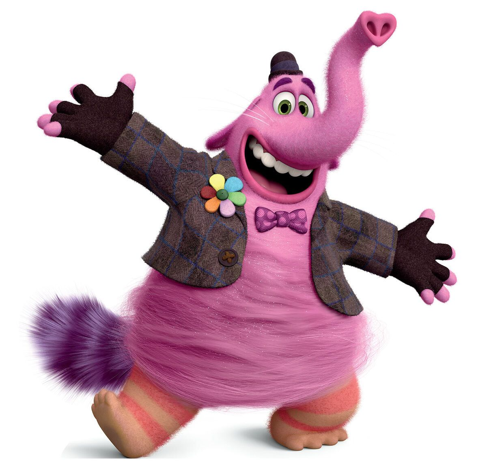
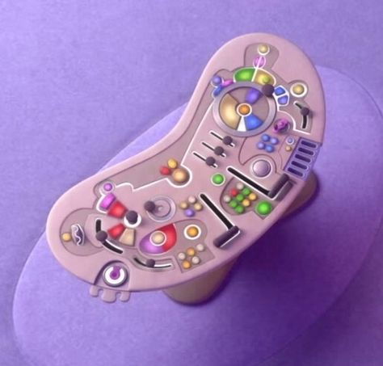
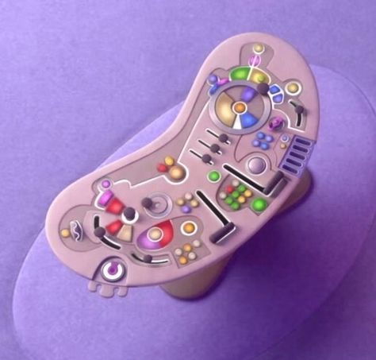

Emoções diferentes em outros paísesNo Japão (⛩️), o brócolis (🥦) foi substituído por pimentão verde (🫑)...
A adaptação foi feita para manter a coerência cultural da cena de "Nojinho".

O nome original seria diferente
Inicialmente, o filme teria o nome provisório de “The Inside Story” (A História de Dentro).
A memória favorita muda de cor
No início do filme, a memória central da Riley era totalmente amarela (Alegria).
No final, ela ganha tons de azul (Tristeza)...
As vozes e piadas foram adaptadas para cada país...
Algumas expressões foram localizadas para que as crianças de cada cultura entendessem melhor.
As emoções têm formas simbólicas
💛 Alegria – inspirada em uma estrela
💙 Tristeza – lembra uma gota
❤️ Raiva – parece um tijolo/quadrado

💜 Medo – fino e nervoso
💚 Nojinho – brócolis estilizado
Inicialmente teria 27 emoções
Durante o desenvolvimento, a Pixar chegou a listar 27 emoções diferentes...
A idade de Riley foi escolhida a dedo
Ela tem 11 anos, pois essa é uma fase de grandes mudanças emocionais...
Oscar e reconhecimento
O filme venceu o Oscar de Melhor Animação em 2016.
Também foi indicado a Melhor Roteiro Original...
Consultoria científica real
Psicólogos como Paul Ekman e Dacher Keltner ajudaram na construção das emoções...
Bing Bong quase foi cortado

O amigo imaginário Bing Bong quase foi deixado de fora do roteiro.
Porém, sua cena de despedida emocionou tanto os roteiristas que decidiram mantê-lo.
A mente como uma cabine de avião
 

A sala de controle das emoções foi inspirada em painéis de aviões e naves...
As 27 emoções inicialmente cogitadas
Segundo fontes ligadas à produção, algumas das emoções que estavam na lista original incluem:
Alegria, Tristeza, Raiva, Medo, Nojinho, Surpresa, Orgulho, Confiança, Ansiedade, Nostalgia, Inveja, Tédio,
Romance, Encantamento, Empatia, Interesse, Triunfo, Admiração, Adoração, Satisfação, Calma, Horror, Temor,
Excitação, Desejo, Estranhamento, Diversão, Dúvida, Simpatia, Apreço visual
Essas emoções foram consideradas para representar a complexidade emocional humana...
Simplicidade visual e narrativa
Facilidade de identificação para o público infantil
Base nas emoções universais da psicologia de Paul Ekman
Com o crescimento de Riley em *Divertida Mente 2*, algumas dessas emoções descartadas... ganham espaço.
Como as emoções mudam em diferentes culturas
O filme originalmente teria mais de 20 emoções...
Em *Divertida Mente 2*, os adultos não apresentam as novas emoções que surgem em Riley...
Os pais da Riley têm um conjunto emocional mais limitado...
Emoções como o amor foram deixadas de fora ou escondidas...
Algumas teorias imaginam pares entre emoções...